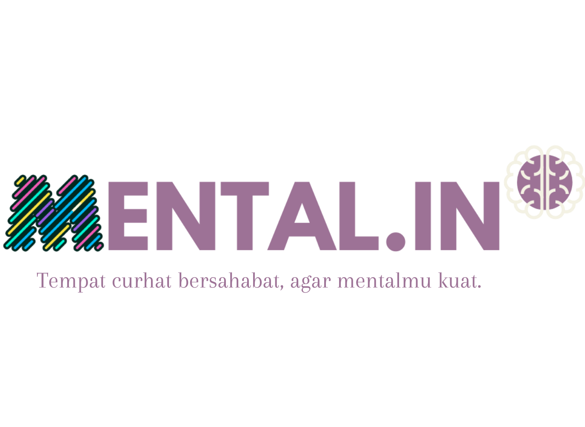

Aplikasi Meditasi Mudah untuk Kebutuhan Kesehatan Mental KamuMental.in adalah layanan kesehatan mental berbasis teknologi. kamu dapat melakukan self-help dengan meditasi dan pengantar lelap serta konseling online dengan psikolog profesional langsung dari smartphone Anda. Kami yakin bahwa layanan kesehatan mental seharusnya dapat dijangkau siapapun, kapanpun, dan dimanapun tanpa kendala mobilitas. |